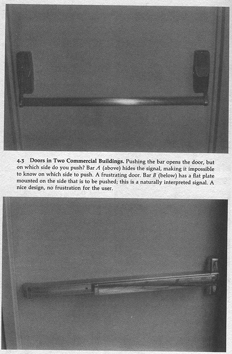
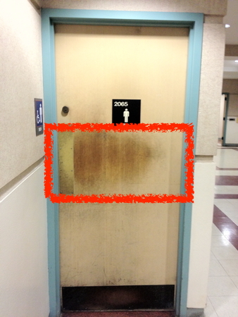
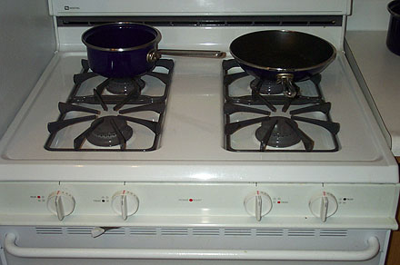
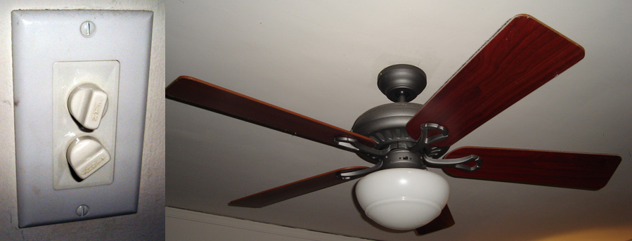
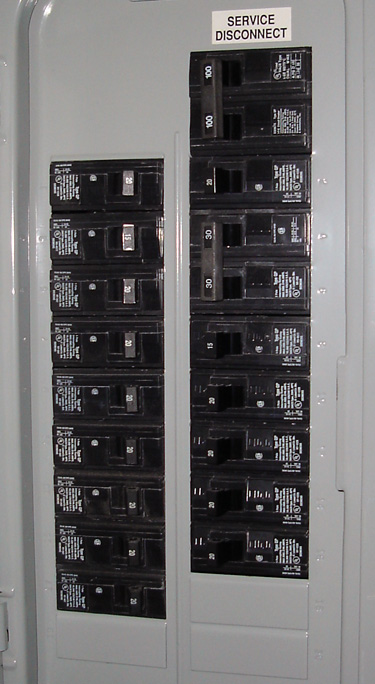
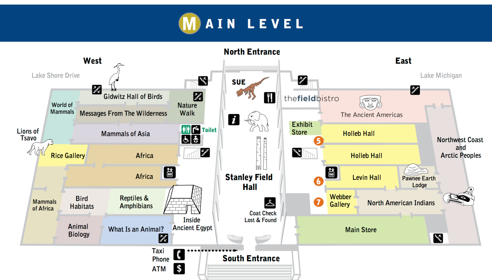

Introduction and the Design of Everyday Things
Introduction:
Making a program work for you is pretty easy.
Making it
work for another user is much harder.
You need to think about the actual users of your software early in the design stage, and keep their needs in mind all the time.
Engineers are not trained in design and psychology and
these are increasingly important in writing good software.
People in general have a hard time sitting quietly while people criticize your hard work, but this is very important to creating a useful
product.
This course is primarily about the procedures to go
through to create good designs and evaluate them.
This course is
not about teaching you how to write a bunch of programs with a
specific widget library; widget libraries come and go.
This course
is going to focus on higher level concepts of how to create useful
user interfaces.
We will be using
Processing,
Processing.js and HTML for creating the user interfaces
for this course. There will be two projects.
If you are the kind of person that wants specific
quantifiable metrics for a given grade on a programming project,
then this may not be the class for you.
There are many rules for
creating good user interfaces and many are in direct conflict with
each other, so finding the balance is as much an art as a science
- that's why its hard to do.
Affordances - perceived and actual properties of
a thing, primarily those fundamental properties that determine
just how the thing could possibly be used." Affordances provide
strong clues to the operation of a thing
- Knobs are for turning
- Buttions are for pushing
- Slots are for inserting things into
Provide a good conceptual model and make things visible

some other examples


Here is a better solutionhttp://www.baddesigns.com/scidoor.html
 How about our bath room doors?
and a short 5 minute
video: https://www.youtube.com/watch?v=yY96hTb8WgI
Two conceptual models
- the designer's
conceptual model
- the user's
conceptual model
---> Sketching?
Thermostat - will a room or
oven heat (or cool) faster if the thermostat is turned all the way
to the maximum setting?
The 'folk' theories of thermostats
- timer theory - thermostat controls the relative proportion of time that the device stays on
- valve theory - thermostat controls how much heat (cold) comes out of the device
- both true
- both are wrong. Thermostat is an on/off
switch - fully on or fully off - no in between
The design gives no hint to the
actual model so the users form their own theories
Why is the
basic automobile easy to figure out?
- Things are visible
- Good mappings between controls and things controlled
- Single controls have single functions
- at least for driving - dealing with the GPS / music
infotainment display is another story
- Good feedback - immediate and obvious effect
This is
pretty important when you go on a trip and rent a different car.
You need to be able to drive that car safely.
Once you get
to the hotel you run into something that may have less obvious
mappings like an alarm clock. Given the prevalence of smart phones
these may begin to disappear soon, but when an alarm that you
didn't set goes off at 5am and you scramble to turn it off you
have a user interface problem to deal with.
Here is a
classic analog clock.
The display
shows the current time and the time that the alarm is set to.
There are
three controls with a pretty decent set of icons:
- small bar: pull out to turn alarm on / push in to turn alarm
off
- small knob: if the knob is pushed in, turning it sets the
alarm, if the knob is pulled out then turning it sets the
time. You can turn the knob slowly or quickly, and turn it in
either direction.
- button on the top: hit it to snooze
How do I know
when the alarm is on? I need look at or feel for the bar on the
back to see if it is in or out.

Here is a
digital analog clock.
The display
shows the current time and the time and whether that time is pm
There are
three controls on the front and top with textual names:
- small 3 position bar on the left ("TIME: FAST / RUN : SLOW"):
push the bar up to fast and the time on the display goes forward
quickly. push the bar to run and the time on the display passes
normally, push the bar to slow and the time on the display goes
forward slowly. If you go past the correct time you need to keep
going back around until the right time appears again
- small 3 position bar on the right (ALARM: ON / OFF / SET") :
on and off are pretty self explanatory, and when this bar is
pushed to set then the controls on the left set the alarm time.
- button on the top ("SNOOZER"): hit it to snooze
How do I know
when the alarm is on? Another dot appears a the bottom of the
display under the PM dot.

Here is
another digital analog clock.
The display
shows the current time and the time and whether that time is pm
There are
three controls on the back and top with textual names:
- small 2 position bar on the left ("DIMMER: HI / LO"): sets the
brightness of the display
- small 3 position bar on the (TIME SET / LOCK / ALARM SET") :
push the bar to time set and you can set the current time, push
it to lock and time passes normally, push it to alarm set and
you can set the alarm time
- small push button on left ("SLOW") holding this button
in when in time set or alarm set will move the appropriate time
forward slowly
- small push button on left ("FAST") holding this button
in when in time set or alarm set will move the appropriate time
forward quickly
- small 2 position bar on the right ("ALARM: ON / OFF"): sets
the brightness of the display
- button on the top ("SNOOZ ALARM"): push the lever up to turn
the alarm on and down to turn the alarm off.
How do I know
when the alarm is on? The upper dot of the colon in the time glows
slightly brighter.
Note that
TIMEX is a little inconsistent with their control names: 'DIMMER'
is written horizontally, TIME SET / LOCK / ALARM SET doesn't have
one, slow and fast appear to be named 'HONG KONG' and ALARM is
written vertically.

But in all
these cases one interface remains the same ...
Sony sells a clock where the time is preset at the factory so you
only need to choose your time zone and it should always keep the
correct time, aside from governments changing the rules on
daylight saving time. Other clocks now listen to the airwaves to
set themselves automatically. However you still need to set the
alarm yourself.
Given all of
these choices, what do I use for an alarm clock? my smartphone.
- it knows where it is located so it knows the timezone
- it can regularly check for the current time
- it knows the rules for daylight savings time
- I can change the display settings
- I can set different alarm patterns for different days
- I can set the alarm at any time since the phone is with me all
the time
- I can set a simple alarm by talking to my phone
- It gives me access to weather, email, news etc when I wake up
The clock and alarm
interface for my phone did not try to emulate the controls on
the physical devices, even though those controls were familiar.
How about watches?
- classic analogue watch
- small knob on a little stem
- pull the stem out to activate the stem
- turn forward or back to change the time forward or back
- push the stem back in so no accidental changes occur
- setting the day of the week and date are trickier and can
take much longer

- digital watch from the 70s
- same basic functionality - 2 to 4 buttons
Most of these issues
occur because the human is forced to conform to what is esier
for the underlying (hidden) technology.
Mapping -
relationship between controls and their affects. Want the mapping
to be 'natural' - taking advantage of physical analogies and
cultural standards.
- steering wheel
- digital alarm clocks
- stove burners
- light switches

Some examples from a house
- no manuals for the appliances, no notes on what controls what
- trial and error
light switch
for fan/lights in family room

porch lights
(track lighting, a fan with a light, and an outside light)

fuse box / circuit breakers

some more examples:
http://www.baddesigns.com/examples.html
7 stages of action
- Forming the goal - state to be achieved (often
ill-formed)
- Plan the action
- Specify an action sequence
- Perform the action sequence
- Perceive the state of the world
- Interpret the perception
- Compare the outcome with the goal
7 Stages as Design Aid
How easily can a person
- Determine the function of the device
- Tell what actions are possible
- Determine mapping from intention to physical movement
- Perform the action
- Tell if system is in desired state
- Determine mapping from system state to interpretation
- Tell what state system is in
Designing for error
- Understand the cause of error and design to minimize those
causes
- Make it possible to reverse (undo) actions, or make it harder
to do what cannot be reversed
- Make it easier to discover errors that do occur and make them
easier to correct
- Think of an object's user as attempting to do a task, getting
there by imperfect approximations, Don't think of the user as
making errors, think of the actions as approximations of what is
desired
Some Class Discussion Topics
Vending Machines
- How do I choose what
I want?
- How do I know if its
in stock?

Finding your way ...
Field Museum floor maps: https://www.fieldmuseum.org/file/425591

Sources:
- "Design of Everyday Things" by Donald Norman
- "User Interface Design" by Andrew Johnson
- "Bad Human Factor Designs" by Michael J. Darnell